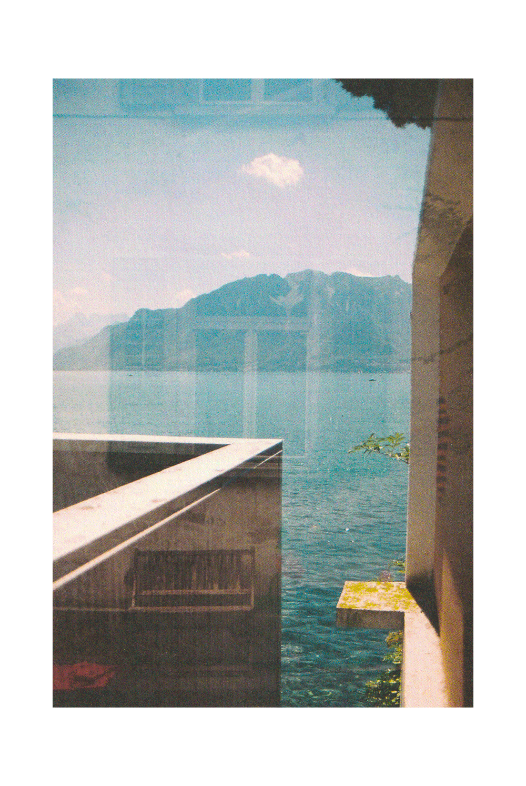
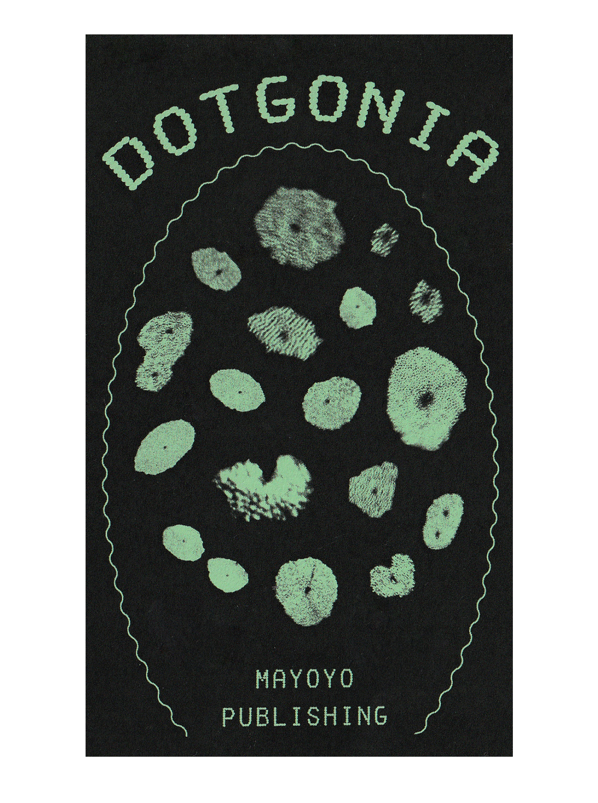
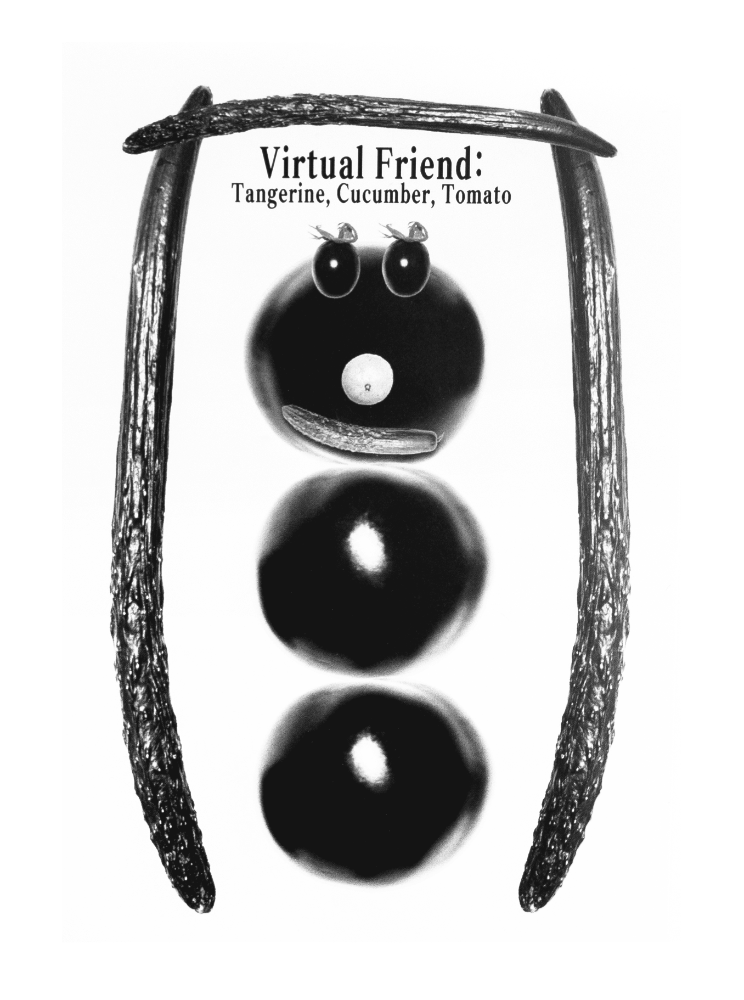
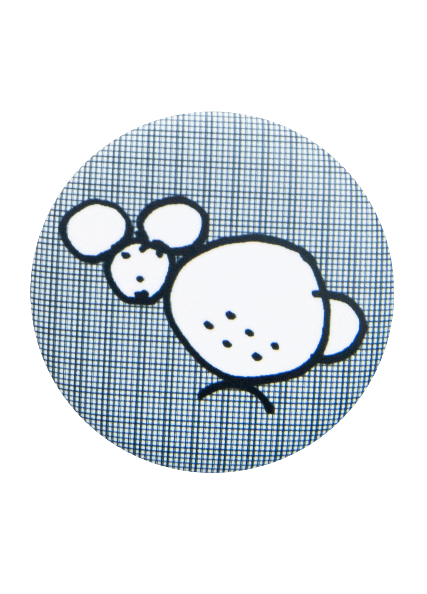
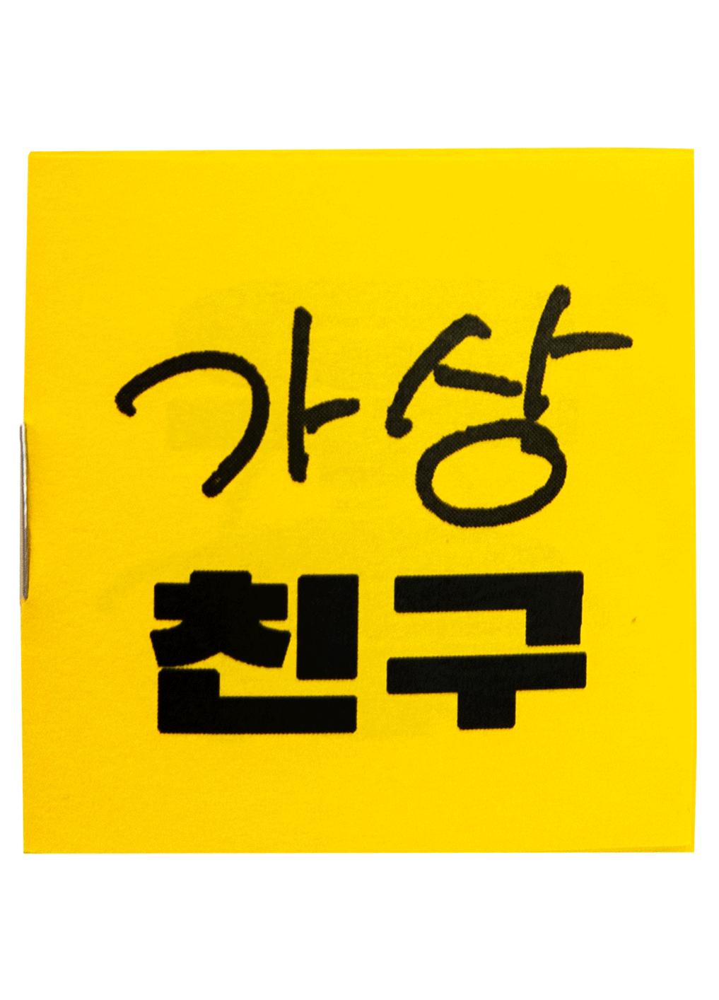
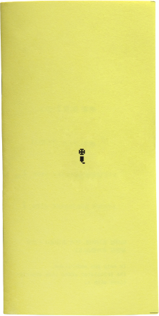
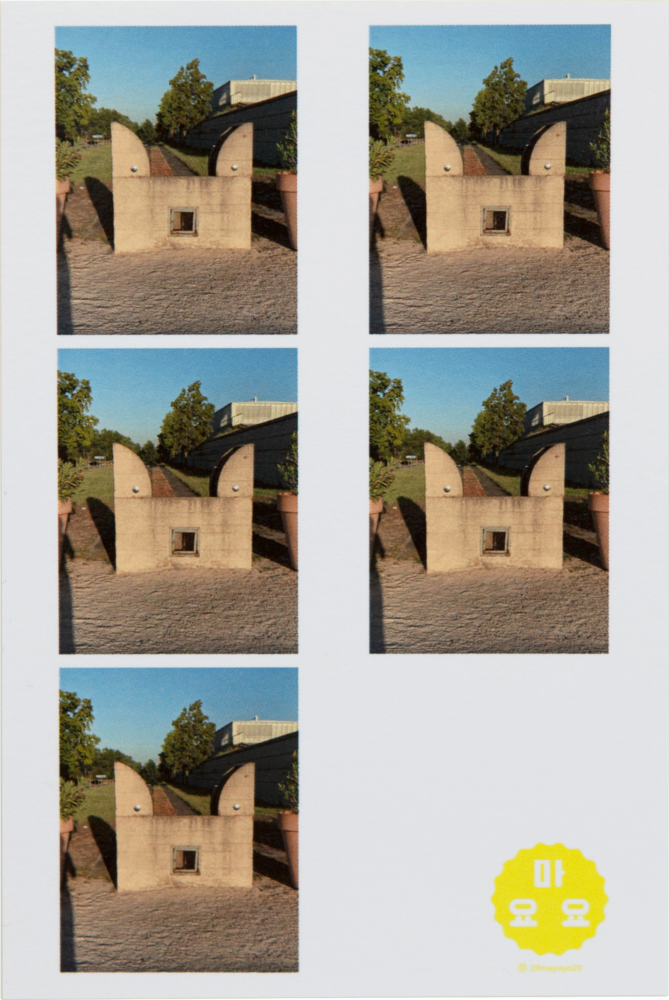

마요요 퍼블리싱 ● MAYOYO PUBLISHING
About

스위스위스
Swisswis
2022 마요하계진
2022 Summer Seasonal Mayozine

도트고니아
Dotgonia
2022 마요춘계진
2022 Spring Seasonal Mayozine
만두
Mandu
2022 마요동계진
2022 Winter Seasonal Mayozine

가상친구(사진)
Virtual Friend(Photo)
가상친구(사진)
Virtual Friend(Photo)

가상친구(Drawing)
Virtual Friend(Drawing)

가상친구(그림)
Virtual Friend(Drawing)
학
Crane
2021 마요추계진
2021 Fall Seasonal Mayozine

시게타카씨와의 인터뷰
Interview with Shigetaka Kurita

얼굴 2021
Face 2021
얼굴들 2020
Faces 2020
Web designed by
Lee Yoyo
/ Photo by Kim Yoyo
UP